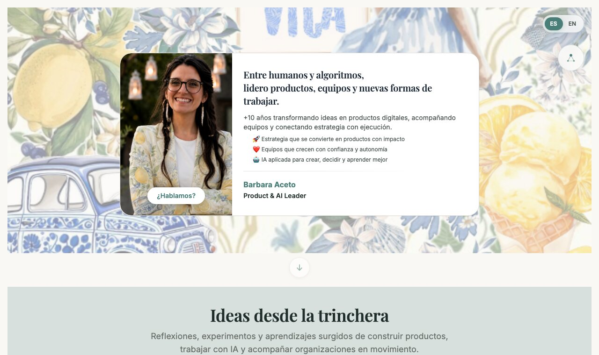
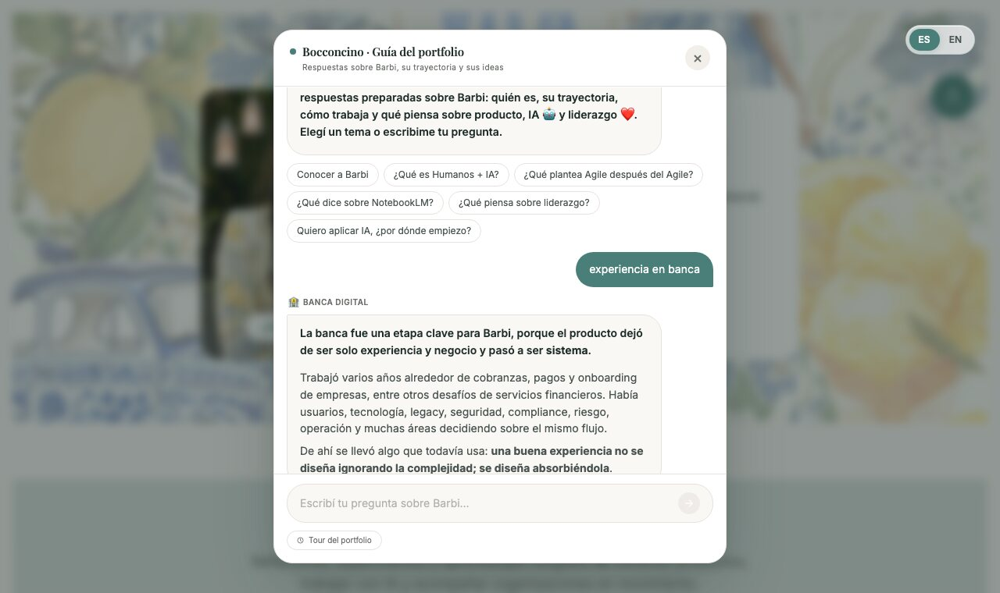
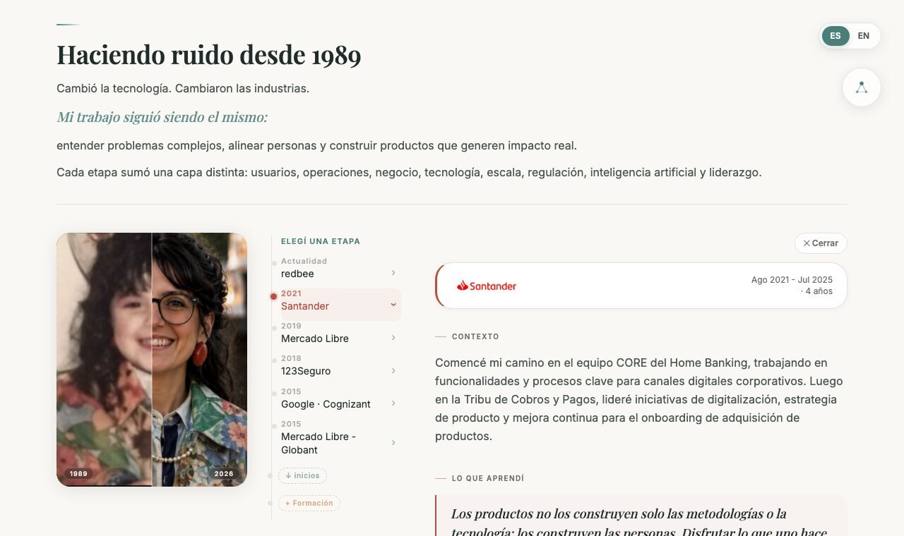
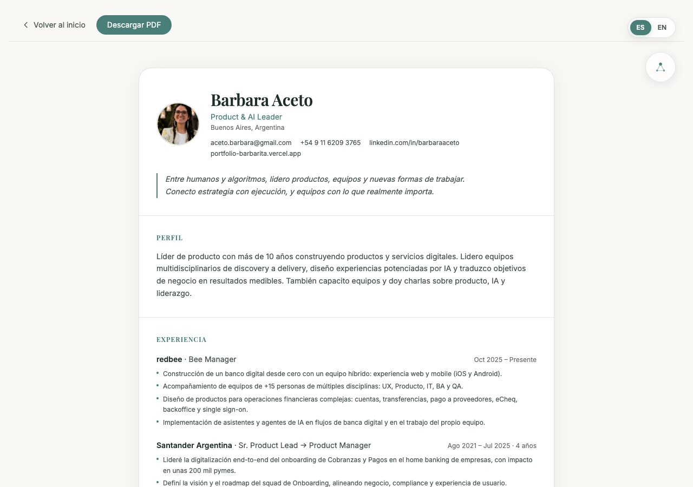
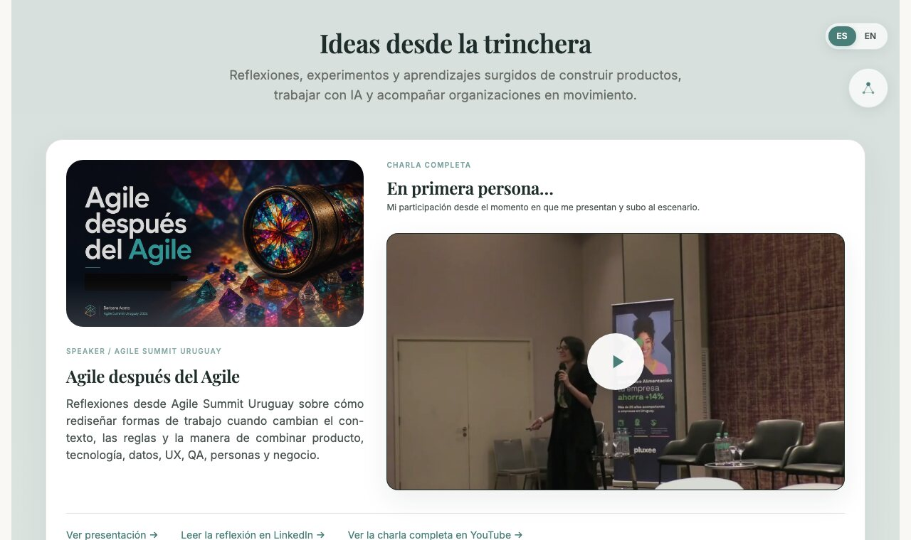
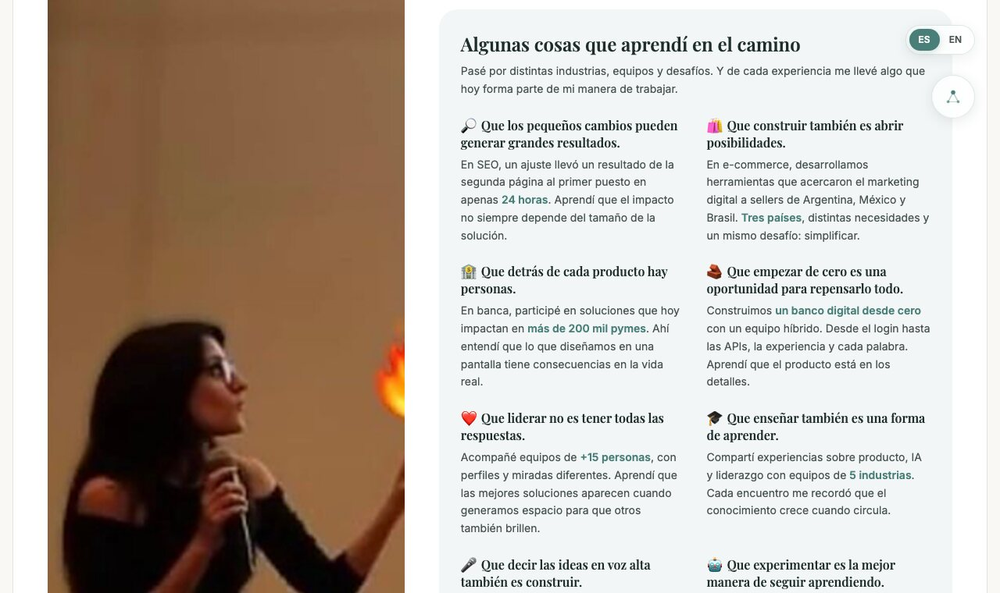
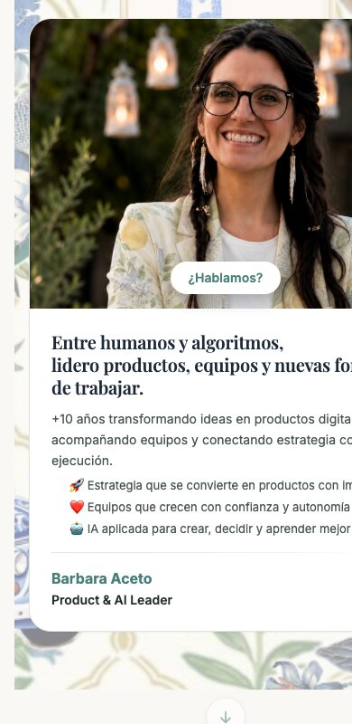
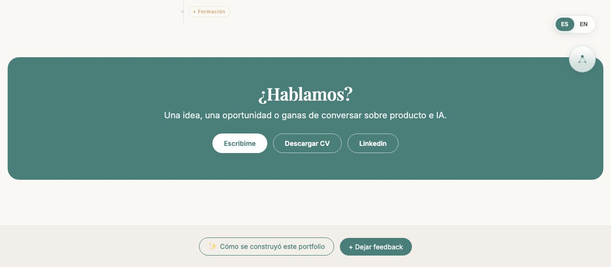

Barbara Aceto
Entre humanos y algoritmos,
lidero productos, equipos y nuevas formas de trabajar.



El problema
El CV sigue existiendo, pero como una pieza más

El One Sheet resume la experiencia en una hoja descargable. El portfolio cuenta lo que una hoja no puede: por qué y cómo.
La visión del producto
Quería crear un espacio que reflejara quién soy, cómo pienso y cómo construyo.


Estrategia y diseño
Todo el recorrido vive en una sola página, pensada para leerse de arriba hacia abajo.
El recorrido de quien entra, de la primera impresión a la conversación.
| Rol principal | Atraer y dar contexto | Mostrar criterio en público | Explicar cómo pienso | Demostrar recorrido | Facilitar la conversación |
|---|---|---|---|---|---|
| Contenido clave | Propuesta de valor y primer vistazo | Charla, videos y notas | Relato y ocho aprendizajes con datos | Línea de tiempo interactiva | Contacto, CV y LinkedIn |
| Intención | Entender rápido quién soy | Ver ideas en acción | Comprender criterio | Validar experiencia | Dar el próximo paso |
Acompañan todo el recorrido Bocconcino, el guía con respuestas sobre mí · One Sheet descargable · Tour de bienvenida · Español e inglés
“Diseñando una identidad propia.”
Tipografía
Aa Playfair Display · títulos con carácter
Aa Inter · texto claro y legible
Paleta de colores
Principios
Navegación intuitiva · Componentes reutilizables · Consistencia visual · Narrativa progresiva
Stack completo
Elegí tecnologías modernas, simples y escalables que me permitieron moverme rápido sin sacrificar calidad ni performance.
Interfaces reactivas y componentes reutilizables.
Build rápido que acorta los tiempos de espera.
Interfaces consistentes y responsivas.
Control de versiones, historial y backup.
Cada push a main publica el sitio en menos de un minuto.
Formulario de feedback sin backend propio.
Qué se mira, qué se toca y qué le preguntan al guía.
Brainstorming, estructura, copy e investigación.
Asistencia de IA directamente sobre el código: refactorización, debugging, pruebas en el navegador y despliegues. Mi mejor combo para construir.
Construcción del guía
Sumé una capa conversacional para que quien visita explore mi trabajo con sus propias palabras. Sin backend, sin costos, sin modelo de IA externo.
Botones de temas o una pregunta libre.
Compara con palabras clave y puntúa cada respuesta.
Clara: responde. Dudosa: pregunta. Ninguna: deriva.
Sugiere temas, lleva a una sección o abre el contacto.
“Reduciendo el ciclo entre pensar y construir.”

Desde entonces el sitio no dejó de cambiar: la versión de hoy es una sola página, con trayectoria interactiva, guía conversacional y un CV descargable, pensada también para celular.
El loop continuo de iteración
Cada ciclo de observación, construcción y mejora acerca el producto al resultado que buscamos.
Iteraciones reales del proyecto
Antes Trayectoria vivía en otra página.
Después Es una sección del Home: se elige una etapa y el detalle se abre ahí mismo.
Antes Hablaba como si fuera yo y arriesgaba respuestas.
Después Bocconcino habla sobre mí, pregunta cuando duda y deriva cuando no sabe.
Antes “Por qué construyo” era un texto abstracto.
Después Ocho aprendizajes, cada uno con un dato concreto y una reflexión.
Antes “Descargar CV” bajaba una imagen.
Después Un One Sheet alineado con LinkedIn, descargable en PDF.
Problemas reales
Aprendizajes
Producción
Después de iterar, testear y ajustar cada detalle, llegó el momento de llevar el proyecto al mundo real. De local a producción.
El día más intenso
13 de mayo de 2026 · 26 commits
El día más activo no fue el inicio ni el final: fue el momento en que todo se conectó. Trabajar con un loop tan corto hace que cada cambio se pruebe en vivo antes de pasar al siguiente. No es caos, es ritmo de producto.
portfolio-barbarita.vercel.app
linkedin.com/in/barbaraaceto
